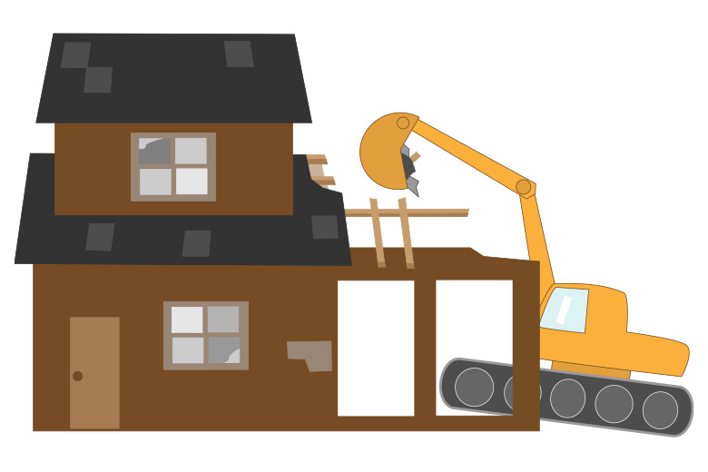
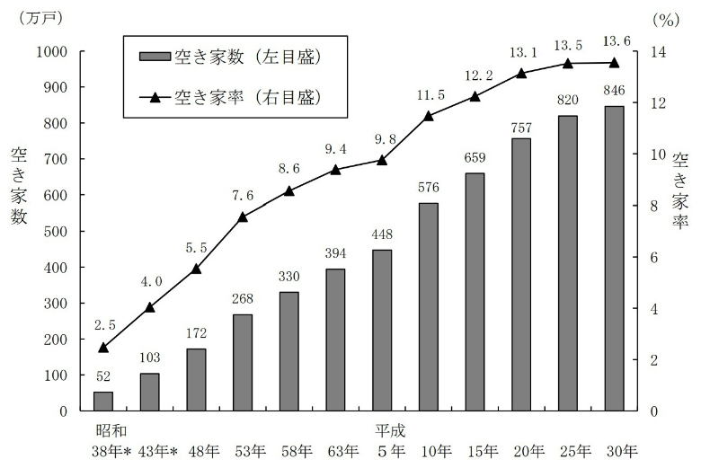
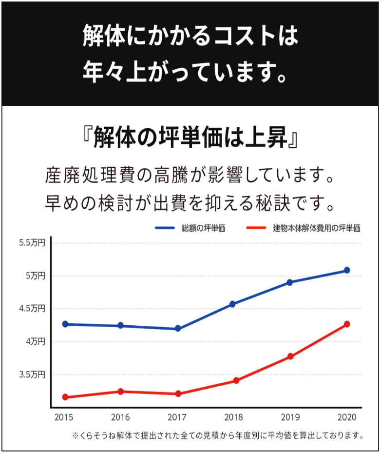
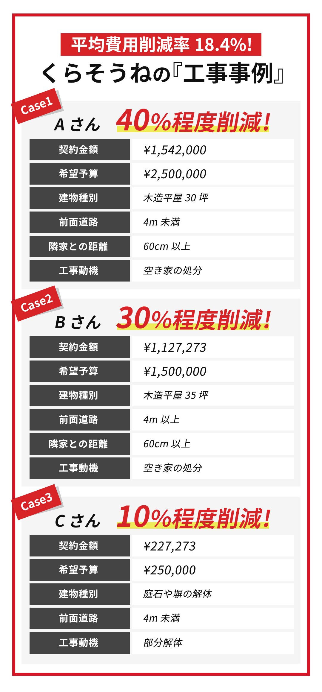
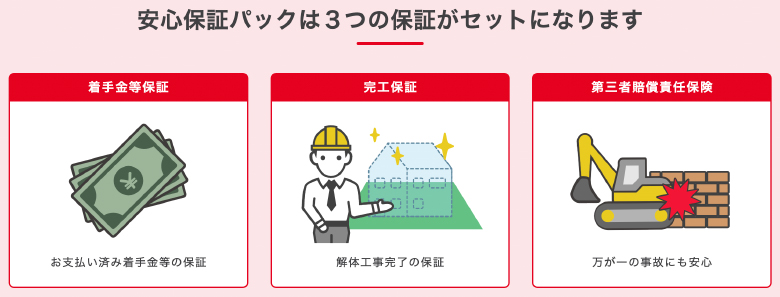

【空き家の解体】放置すればするほど費用が高くなる？

「いずれは解体しなきゃ…」で大丈夫？
近年、報道番組などでもよく特集されている『空き家問題』。
バブル景気に乗って次々建てられた新築住宅の数に反比例して減少していく人口、進んでいく核家族化。
「田舎に両親だけが住んでる実家、いずれはどうしよう…」と考えている人は決して少なくないと思います。
《空き家数及び空き家率の推移
−全国(昭和38年〜平成30年)》

【出典：総務省統計局 平成30年 住宅・土地統計調査】
現在すでに空き家をお持ちの方にとっても、「いずれは取り壊して土地活用しなきゃ…」とは思っているものの、
何かを作り上げる楽しみのある建設工事とは違って「ただ壊すだけ」の解体工事には食指が動きにくいことや、
決して安い買い物ではないため、きっかけが掴めないまま放置してしまっている人も多いのではないでしょうか。
でも、だからといってこのまま永遠に放置しておくわけにはいかないのが現実であり、本当に「いずれ」でいいのでしょうか？
解体工事の費用って？
解体工事にかかる費用は、当然ながらその建物の大きさや構造、 立地条件などによって大きく変わりますが、解体費用の大まかな内訳はどの建物でも基本的には同じです。
-
養生費…足場、防音・防じんシート、敷地の仮囲いゲート、仮設トイレや仮設水道など
-
人件費
-
重機使用料…重機を所有していない工事会社は重機レンタル料など
-
廃棄物処分費…現在は建築リサイクル法によって廃棄する費用がかかります
これらの4つの項目が解体費用の見積りの大半を占めています。
この中の「人件費」「廃棄物処分費」が、年々上がり続ける見込みがあることをご存知でしょうか？
高騰していく見込みの解体費用
近年では、解体現場でも建設現場でも共通して、工事現場の「職人不足」が非常に深刻です。
とてもハードな仕事内容のため、せっかく手取り足取り教えても一人で作業ができるまでの
技術を習得する前にリタイアしてしまうケースが多かったり、選べる仕事が多様化していることで
ハードな仕事が選ばれにくくなってきていたり、様々な理由から職人離れが起きています。
現在、工事現場で活躍している職人の多くは55歳以上で、いずれその職人たちも退職を迎えていきます。
《建設業就業者の高齢化の進行》
【出典：総務省「労働力調査」を基に国土交通省で算出】
そうなると、自社の社員でまかなえずに外部委託でスタッフをかき集めて作業をしなければならない
工事会社も増え、その費用は当然ながら解体費用に反映されていきます。
人材確保が年々難しくなっていく一方で、増えていく空き家。
解体工事にかかる人件費がおのずと上昇していくことは間違いないと言えそうです。
そしてもうひとつ、解体費用の中で大部分を占めているのが「廃棄物処分費」です。
日本の高度成長がピークを迎えてバブルがはじけた直後、つまり1995年頃から
開始した循環型社会への移行により、日本をはじめ各先進国では「簡単にゴミを
捨てられない」状況になっています。
-
1995年
容器包装リサイクル法（缶、瓶、ペットボトル、段ボール、プラスチック） -
1998年
家電リサイクル法（エアコン、テレビ、冷蔵庫、洗濯機） -
2000年
食品リサイクル法（食品廃棄物→肥料） -
2000年
建設リサイクル法 -
2002年
自動車リサイクル法
さらに、以前は中国やタイ、マレーシアなどで受け入れてくれていた廃棄物が、
現在では「受け入れ禁止」となっているため、先進国は
「自分の国で出したごみは自分で処理する」状況に。
つまり、解体工事で排出される多くの廃棄物も簡単に処分することができなくなっていて、
その処分費用は年々上がっていくと予測されています。
解体工事は放置すればするほど割高に
「いつかはやらなきゃいけないけど、いつでもいいならまだいいか」
と放置している空き家は、決して「いつでもいい」わけではない。
今より5年後、10年後のほうが更に費用が上昇している可能性が高いことを
お伝えしました。
人材確保の困難や廃棄物処分費の上昇という避けられない現実がある中、
少しでも解体費用が安いうちに済ませてしまうのが賢明と言えますよね。
解体工事は、決して「いつでもいい」わけではありません。
「あの時やっていれば良かった」と後悔しないためにも、いま空き家をお持ちの
方はなるべく早いうちの解体工事をおすすめします。

くらそうねは２ステップで、解体工事を行う地域の最安値を確認できます
上記のように、解体にかかる費用は常に変動しています。
まずは現在の解体費用を確認することをお勧めいたします！
くらそうねは、国交省分科会にて紹介された、安心のサービスです。
解体工事会社様も１０００社以上が登録しており、 工事費用も予算に対して平均18.4％おやすくなっている実績もあり、 なんと最大で40％以上安くなったお客様もいらっしゃいます。

さらに、解体に安心な「安心保証パック」を無料でご利用することもでき
「お支払い済み着手金等の保証」「解体工事完了の保証」万が一の事故にも安心な
「第三者賠償責任保障」などサービスを無料でご利用できます。

また初めての解体には嬉しい、くらそうねサポートサービスが最初からついており、 工事完工までを、カスタマーサポートがお客様をサポートいたします。
▼ 詳細はこちら